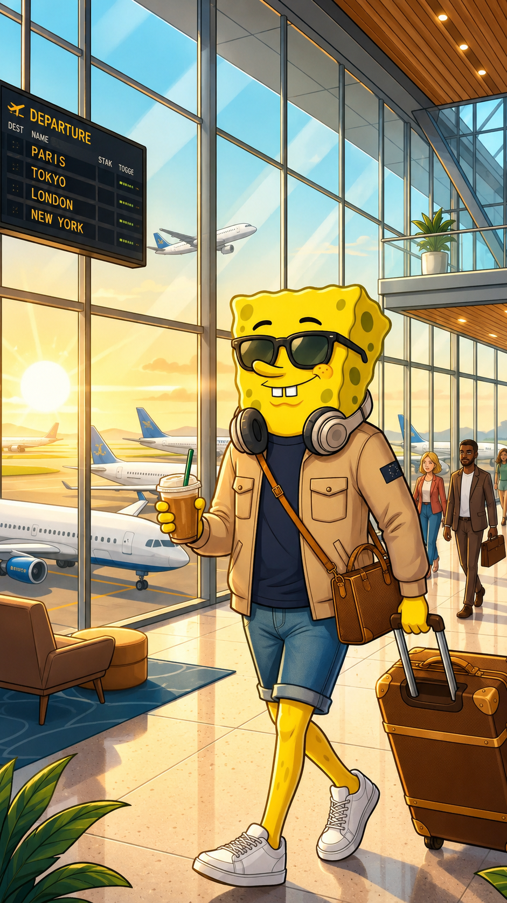
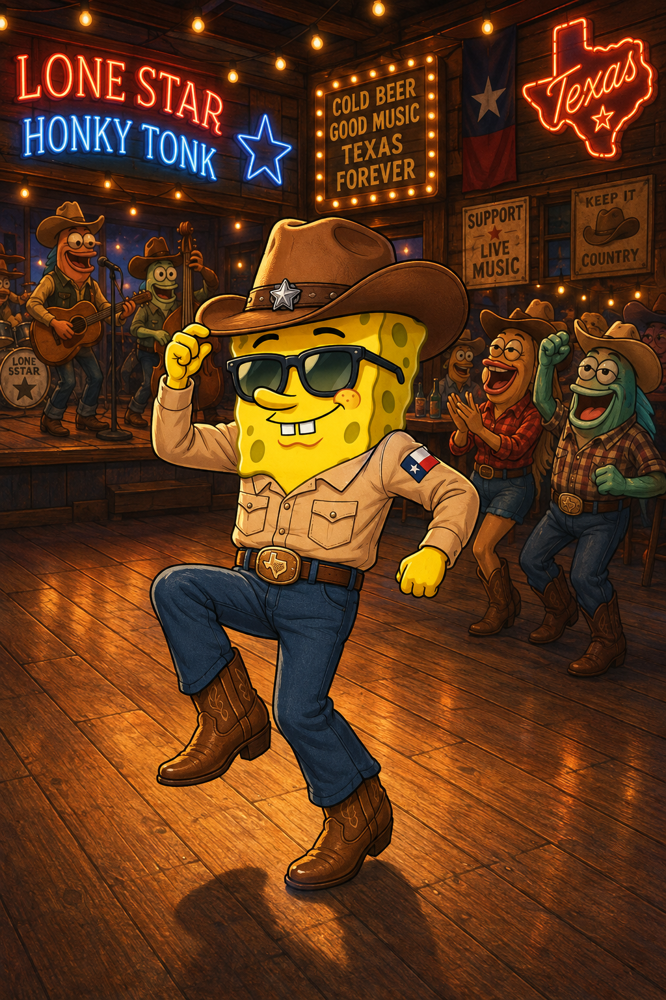

RIO DE JANEIRO, BRAZIL
Sun, Sand & Samba
Incredible views, endless beaches, and enough energy to make even Bikini Bottom seem quiet.
A Long Way from Bikini Bottom.
FROM BIKINI BOTTOM TO EVERYWHERE
A Long Way from Bikini Bottom.
Chasing sunsets, not jellyfish.
Explore the Journey
THE JOURNEY BEGINS
I packed my bags, grabbed my passport, and traded jellyfishing for jet lag. Now I am traveling beyond Bikini Bottom to experience new places, new food, new people, and whatever adventures happen along the way.
No strict itinerary. No boring vacations. Just good memories, questionable decisions, and plenty of stories to bring home.
LATEST ADVENTURES
A few stops from the journey so far. Every destination has its own story, and somehow I keep finding my way into one.
RIO DE JANEIRO, BRAZIL
Incredible views, endless beaches, and enough energy to make even Bikini Bottom seem quiet.
TOKYO, JAPAN
Trains, ramen, mountain views, and a city that always seems to have something new around the next corner.

TEXAS, USA
Cowboy boots, live music, line dancing, and proof that you do not need underwater legs to find your rhythm.